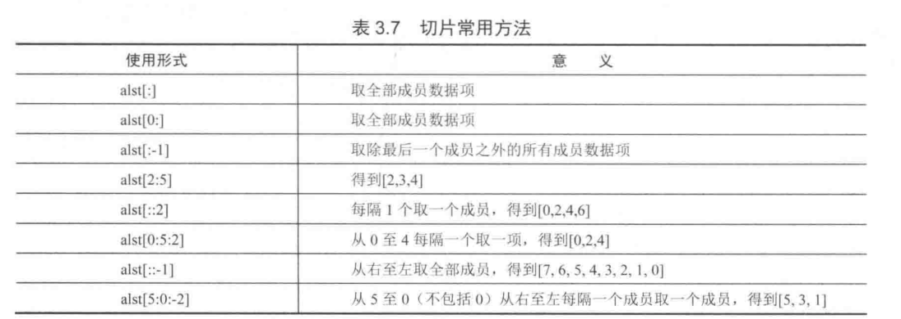

Contents
1.4. 列表 List¶
list() #创建一个空列表
[] #创建一个空列表
1.4.1. 1. 列表类型内建函数¶
list.append(obj) # 向列表中添加一个对象obj
list.count(obj) # 返回一个对象obj在列表中出现的次数
list.extend(seq) # 把序列seq的内容添加到列表中
list.index(obj,i=0,j=len(list)) # 返回list[k] == obj 的k值,并且k的范围在i<=k<j;否则异常
list.insert(index.obj) # 在索引量为index的位置插入对象obj
list.pop(index=-1) # 删除并返回指定位置的对象,默认是最后一个对象
list.remove(obj) # 从列表中删除对象obj
list.reverse() # 原地翻转列表
list.sort(func=None,key=None,reverse=False) # 以指定的方式排序列表中成员,如果func和key参数指定,则按照指定的方式比较各个元素,如果reverse标志被置为True,则列表以反序排列
list.sort(reverse=True) #降序
del
In [16]: maxnum=["hu","jianli","xiaojian","yes"]
In [17]: maxnum[-1]
Out[17]: 'yes'
In [18]: del maxnum[-1]
In [19]: maxnum
Out[19]: ['hu', 'jianli', 'xiaojian']
In [20]: del maxnum[2]
In [21]: maxnum
Out[21]: ['hu', 'jianli']
in
In [22]: maxnum=["hu","jianli","xiaojian","yes"]
In [23]: "hu" in maxnum
Out[23]: True
In [24]: "hu1" in maxnum
Out[24]: False

1.1 代码示例1¶
#!/usr/bin/env python
# -*- coding:utf8 -*-
lsit1 = ["a", 1, "b", 2.0]
print(lsit1[1]) #1
print(lsit1[2]) #b
print(lsit1[-2]) #b
print(lsit1[::-1]) # 反转列表 [2.0, 'b', 1, 'a']
lsit2 = [3, 4, 5, 6]
print(lsit1 + lsit2) #['a', 1, 'b', 2.0, 3, 4, 5, 6]
lsit3 = ["python"]
print(lsit3 * 3) #['python', 'python', 'python']
print("apped()".center(100, "#"))
alst = [1, 2, 3, 4, 5]
alst.append("hu")
print(alst) # [1, 2, 3, 4, 5, 'hu']
print("count()".center(100, "#"))
print(alst.count(1)) #1
print("在列表后追加另一个列表".center(100, "#"))
alst.extend(["1", "哈哈"])
print(alst) # [1, 2, 3, 4, 5, 'hu', '1', '哈哈']
print("查找列表中出现的下标".center(100, "#"))
print(alst.index(2)) # 1
print("在下标处插入元素".center(100, "#"))
alst.insert(2, "hu")
print(alst) #[1, 2, 'hu', 3, 4, 5, 'hu', '1', '哈哈']
print("返回删除的列表元素，最后一个".center(100, "#"))
pop_num = alst.pop()
print(pop_num) # 哈哈
print(alst) # [1, 2, 'hu', 3, 4, 5, 'hu', '1']
print("删除列表的元素2".center(100, "#"))
alst.remove(2)
print(alst) # [1, 'hu', 3, 4, 5, 'hu', '1']
print("反转列表，颠倒".center(100, "#"))
alst.reverse()
print(alst) # ['1', 'hu', 5, 4, 3, 'hu', 1]
# 原地排序
alst1 = [6, 2, 3, 4, 5]
print("对列表进行排序".center(100, "#"))
alst1.sort()
print(alst1) #[2, 3, 4, 5, 6]
# 复制排序
alst1 = [6, 2, 3, 4, 5]
print("对列表进行复制排序".center(100, "#"))
alst2 = sorted(alst1)
print(alst1) #[6, 2, 3, 4, 5]
print(alst2) #[2, 3, 4, 5, 6]
1.4.2. 2.列表的切片¶
2.1 代码示例2¶
# 列表元素的个数最多 536870912
shoplist = ['apple', 'mango', 'carrot', 'banana']
marxes = ['Groucho', 'Chico', 'Harpo', 'Zeppo']
others = ['Gummo', 'Karl']
marxes.extend(others) #合并列表
marxes += others #合并列表
shoplist[2] = 'aa'
del shoplist[0]
shoplist.insert(4,'www')
shoplist.append('aaa')
############ 列表的切片 ###########
shoplist[::-1] # 倒着打印 对字符翻转串有效
shoplist[2::3] # 从第二个开始每隔三个打印
shoplist[:-1] # 排除最后一个
'\t'.join(li) # 将列表转换成字符串 用字表符分割
sys.path[1:1]=[5] # 在位置1前面插入列表中一个值
list(set(['qwe', 'as', '123', '123'])) # 将列表通过集合去重复
{}.fromkeys(l).keys() #列表去重的方法② 通过转换为字典然后在取键
eval("['1','a']") # 将字符串当表达式求值,得到列表
# enumerate 可得到每个值的对应位置
for i, n in enumerate(['a','b','c']):
print i,n
#与enumerate 方式一样
for i in range(len(list)):
print(i,list[i])
1.4.3. 3.序列的内置操作¶
3.1 列表的高级特性¶
代码示例
#!/usr/bin/env python
#-*- coding:utf8 -*-
'''
import sys #加载sys模块
if len(sys.argv) != 2: #判断输入参数是否为2
print("Please supply a filename")
raise SystemExit(1)
f = open(sys.argv[1]) #命令行上参数1的文件名
lines = f.readlines() #将所有行读到一个列表中
f.close()
#将所有输入值从字符串转换为浮点数
fvalues = [float(line) for line in lines]
#打印最小值和最大值
print("The minimum value is ",min(fvalues))
print("The maximum value is ",max(fvalues))
'''
fruit1 = ['apple','orange']
fruit2 = ['pear','grape']
fruit1.extend(fruit2)
print(fruit1)
for i,v in enumerate(fruit1):
print(i, v)
3.2 使用any/all函数¶
##不推荐
found = False
for item in a_list:
if condition(item):
found = True
break
if found:
# do something if found...
##推荐
if any(condition(item) for item in a_list):
# do something if found...
3.3 列表的查找、排序、反转¶
代码举例
#!/usr/bin/env python
#-*- coding:utf-8 -*-
__author__ = '18793'
list = ["apple", "banana", "grape", "orange"]
print(list.index("apple")) #打印apple的索引
print(list.index("orange")) #打印orange的索引
print("orange" in list) #判断orange是否在列表中
list.sort() #排序
print("Sorted list :",list)
list.reverse() #反转
print("Reversed list:",list)
'''
0
3
True
Sorted list : ['apple', 'banana', 'grape', 'orange']
Reversed list: ['orange', 'grape', 'banana', 'apple']
'''